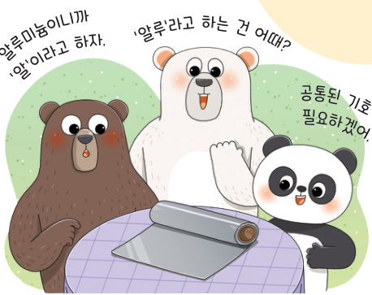
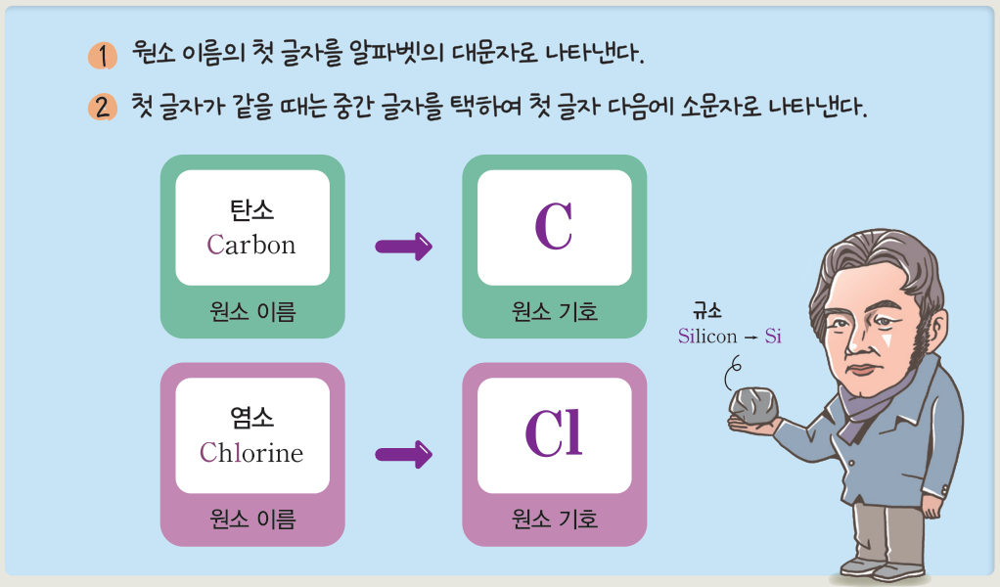
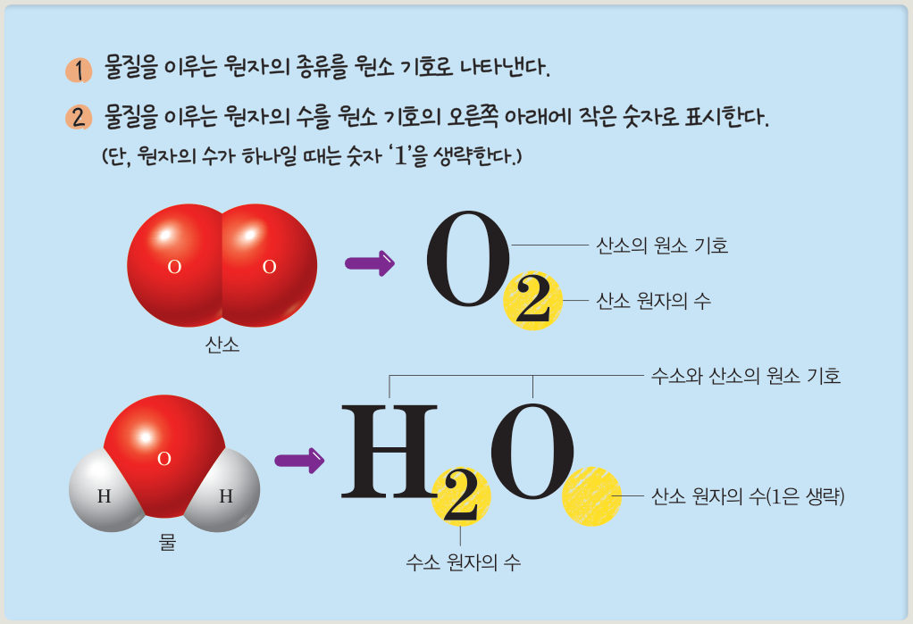
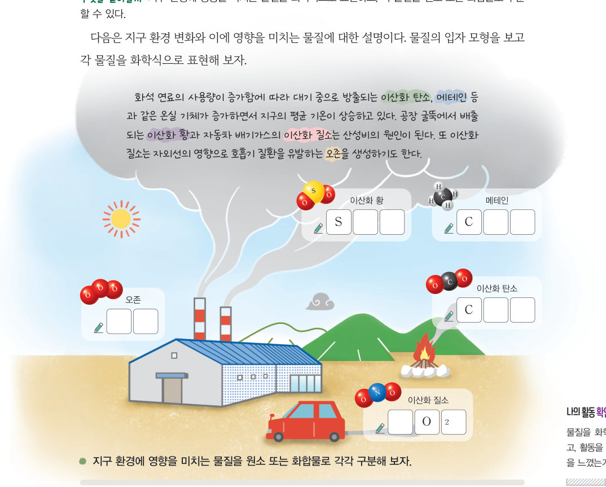

원소와 화합물을 나타내는
원소 기호
“알루미늄이니까 ‘알’이라고 하자.” “‘알루’라고 하는 건 어때?” “공통된 기호가 필요하겠어.” 원소나 화합물을 기호로 어떻게 나타낼까? 원소 기호 카드 놀이를 하고, 입자 모형을 보고 화학식을 써 보자.
우리 생활에서 기호를 정해 사용하면 전달하고 싶은 내용을 간단하게 나타낼 수 있고, 사용하는 언어가 달라도 그 의미를 정확하게 전달할 수 있다. 원소도 간단한 기호를 사용하여 나타내는데, 이를 원소 기호라고 한다. 원소 기호는 세계 공통으로 약속된 기호를 정해 사용한다.

더 알아보기 · 원소 기호의 변천
중세의 연금술사들은 원소를 그림으로 나타내어 구별했다. 돌턴은 원 속에 글자나 그림을 넣어 원소를 표시했고, 1813 년 베르셀리우스가 알파벳을 이용한 원소 기호 표기 방법을 제안했으며, 이 방법은 오늘날까지 사용되고 있다.
물질은 원소 기호를 사용하여 나타낼 수 있는데, 물질을 이루는 원자의 종류와 수를 원소 기호와 숫자로 나타낸 식을 화학식이라고 한다. 물질을 이루는 원자의 종류를 원소 기호로 나타내고, 원자의 수를 원소 기호의 오른쪽 아래에 작은 숫자로 표시한다(원자의 수가 하나일 때는 1을 생략). 예를 들어 산소 기체는 산소 원자 두 개로 이루어져 있어 O₂로 나타내고, 물은 수소 원자 두 개와 산소 원자 한 개로 이루어져 있어 H₂O로 나타낸다.


화석 연료의 사용량이 증가함에 따라 대기 중으로 방출되는 이산화 탄소, 메테인 등과 같은 온실 기체가 증가하면서 지구의 평균 기온이 상승하고 있다. 공장 굴뚝에서 배출되는 이산화 황과 자동차 배기가스의 이산화 질소는 산성비의 원인이 된다. 또 이산화 질소는 자외선의 영향으로 호흡기 질환을 유발하는 오존을 생성하기도 한다.
화학식
화학식
화학식
화학식
화학식
| 산소 | |
| 암모니아 | |
| 메테인 | |
| 이산화 탄소 |
2원소 기호와 화학식
⑵ 화학식: 산소 , 물
| 평가 기준 | 스스로 평가 |
|---|---|
| 과정·기능 원소와 화합물을 화학식으로 표현할 수 있는가? | |
| 가치·태도 모둠 구성원과 협력적으로 소통하며 놀이에 참여했는가? |